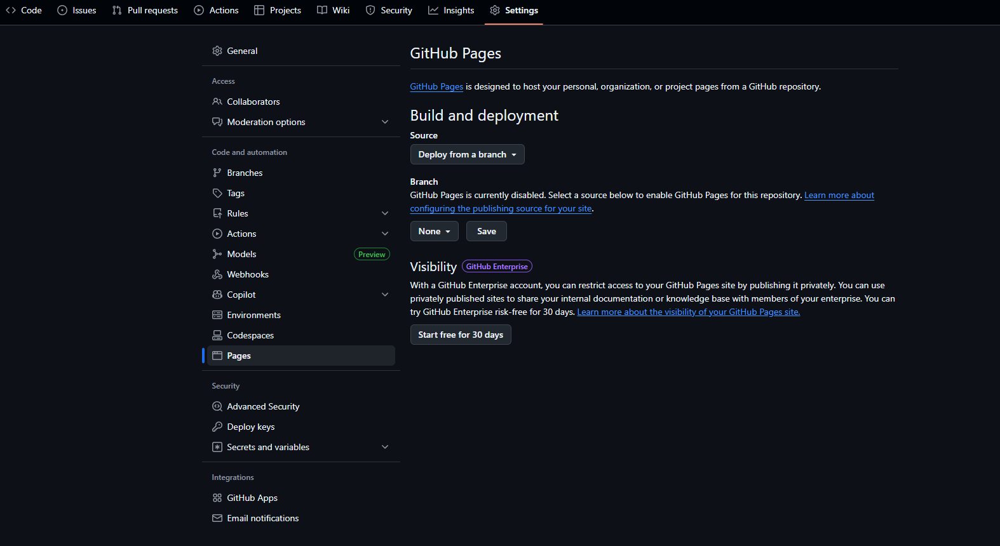

CRIAÇÃO DA PAGINA NO GITHUB PAGES
Acesse GitHub. Clique em New Repository. Dê um nome (ex.: meu-site). Marque a opção Public. Clique em Create Repository. https://github.com/login

ADICIONE OS ARQUIVOS DO SEU SITE
Crie um arquivo index.html no seu computador com o conteúdo da página. No repositório, clique em Add file → Upload files ou use Git para enviar:

ATIVE O GITHUB PAGES
No repositório, vá em Settings → Pages. Em Source, selecione a branch main e a pasta / (root). Clique em Save.
ACESSE SUA PÁGINA
EXEMPLO: Após alguns segundos, seu site estará disponível em: https://seu-usuario.github.io/meu-site/